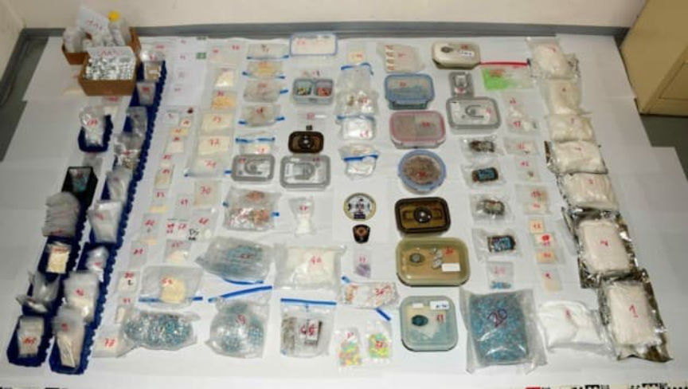
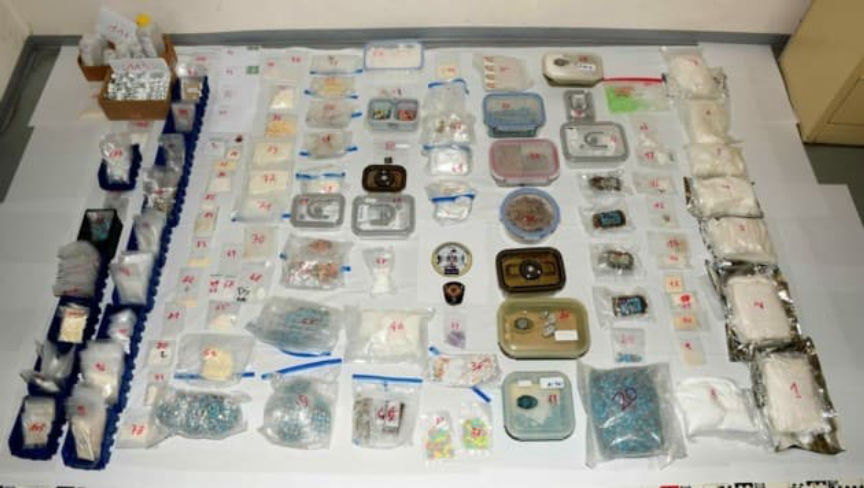

Austrian Police Arrested Two Prolific Ecstasy Vendors
~1 min read | Published on 2022-09-27, tagged Arrested, Darkweb-Vendor, General-News using 172 words.
Police in Austria arrested two prolific drug dealers who sold thousands of ecstasy pills on the darkweb.
Officers with the Vienna State Criminal Police Office (LKA) and the Federal Criminal Police Office arrested two people for allegedly selling thousands of ecstasy pills through darkweb marketplaces. Investigators have been watching the suspects, a 34-year-old man, and a 25-year-old woman, since March 2022.
The duo has been active on darkweb marketplaces since 2020 and “apparently fulfilled every wish of the customer in relation to drugs.” They offered cocaine, ecstasy, speed, MDMA, methamphetamine, hashish, LSD, ketamine, and other substances. Investigators believe the suspects completed at least 7,000 transactions on the darkweb.

During a house search, police officers found 20 kilograms of illicit substances. The 20 kilograms consist primarily of ecstasy pills (19,500 pills). They believe the drugs were worth millions of euros on the street. However, police officers only seized €4,830 in cash.
Both suspects are currently in custody.
Success of the State Criminal Police Office Wie | www.polizei.gv.at, archive.is
Officers with the Vienna State Criminal Police Office (LKA) and the Federal Criminal Police Office arrested two people for allegedly selling thousands of ecstasy pills through darkweb marketplaces. Investigators have been watching the suspects, a 34-year-old man, and a 25-year-old woman, since March 2022.
The duo has been active on darkweb marketplaces since 2020 and “apparently fulfilled every wish of the customer in relation to drugs.” They offered cocaine, ecstasy, speed, MDMA, methamphetamine, hashish, LSD, ketamine, and other substances. Investigators believe the suspects completed at least 7,000 transactions on the darkweb.

The drugs seized by Austrian police. Sorry for the low res.
During a house search, police officers found 20 kilograms of illicit substances. The 20 kilograms consist primarily of ecstasy pills (19,500 pills). They believe the drugs were worth millions of euros on the street. However, police officers only seized €4,830 in cash.
Both suspects are currently in custody.
Success of the State Criminal Police Office Wie | www.polizei.gv.at, archive.is